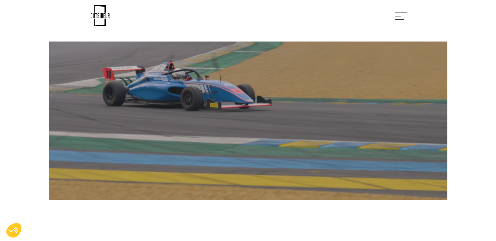
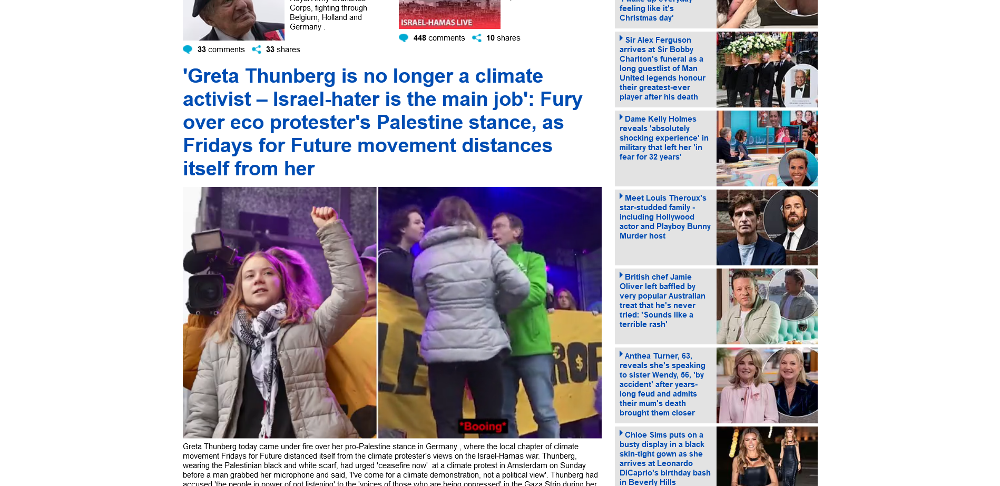
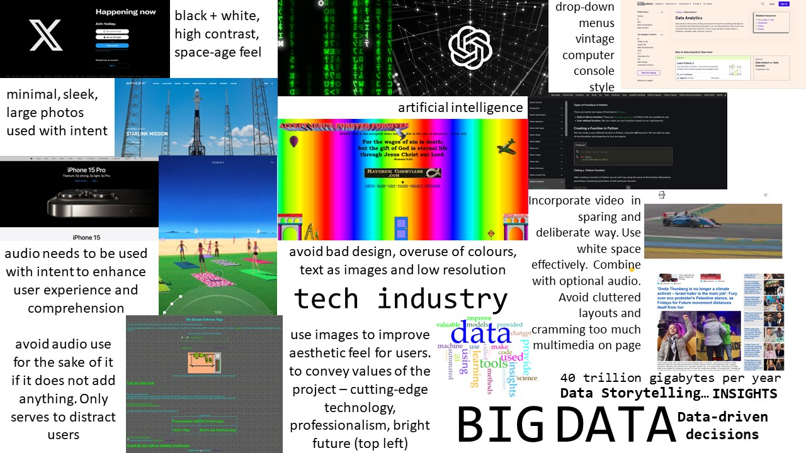

See the images of 2 websites below. You can click on them to take you to the source website. I evaluate each for their video use.
 The first website uses video to showcase the video productions created by the company, Outsideur. This is an example of video used with intent, as the company specialises in video productions, it makes sense for them to open their homepage with a showreel of their work. The whole homepage is just this one video making it the prime focus and it is very minimal from a design point of view. The only other items it contains are the logo, navigation button, and privacy/cookies button at the bottom left. It has a fun interactive design where the boundary of the video expands as the user scrolls. This enhances retention and the video player is in such a prime and bold location, auto-playing as soon as the page is opened. Comprehension is enhanced as well because it is immediately apparant, even though it is a french company, that it is a video production company. It appeals to viewers in a clean, professional and organised way with their sleek use of video. The length of video is suitable - being around 2 minutes long, it shows a decent amount of footage without compromising on load time and the viewers attention span. The video is combined simply with the company's name and logo - saying 'this is who we are.' However, the presentation could be enhanced with an option to turn on the audio, creating a more immersive experience for those who want it.
The second website simply uses video in a cluttered manner. The homepage is already filled with a massive amount of text and images, with a lack of white space. This creates a messy and overwhelming feeling for the reader. The videos are used with the intention of grabbing reader's attention and do not contribute positively the the design and flow of the page. I would argue that they enhance the appeak of one specific new story over another, but overall, they reduce retention and comprehension as there is simply so much multimedia in such a tight space the user cannot focus on 1 thing. The length of the videos are suitable, only being a few seconds long just to catch the users attention. The text and images they are combined with are relevent but the amount is too high.
I have updated my moodboard to include examples of audio use. You can download it by clicking the screenshot.
I found 2 video files that are relevant to my topic. The first is a video of a meeting. The second is a video of a digital globe. I picked the meeting because this is where most data analysis results end up - being presented at a business meeting find out if your insights are worth pursuing. I picked the globe to emphasise how data science is now a global industry. You can watch them below:
I updated my metadata and fustification speadsheet with their details. You can download it here.
I edited the video files above using OpenShot. I split small sections of both video files and edited them together, incorporating my audio from the pervious week and title slides from the tools provided by OpenShot. I also added some effects like fade in, fade out, and dissolve. I then saved 3 different versions with relevant names. For example - vid001-mada-data-video-1080-high-0-1.mp4. You can see the details on my metadata and justification spreadsheet. Watch the files below:
mp4 1080p high quality 82.3mbI am happy with the high quality version above. I am satisfied I have used enough effects and material to make the quick video engaging, without over producing it and distracting from the main message. While the file size is quite high 1080p at 82.3mb compared to the low quality version 480p at 2.68mb, I feel the quality is worth it. Many people have at least 1080p monitors or larger and lower quality will negatively affect users here. All the versions can be viewed above.